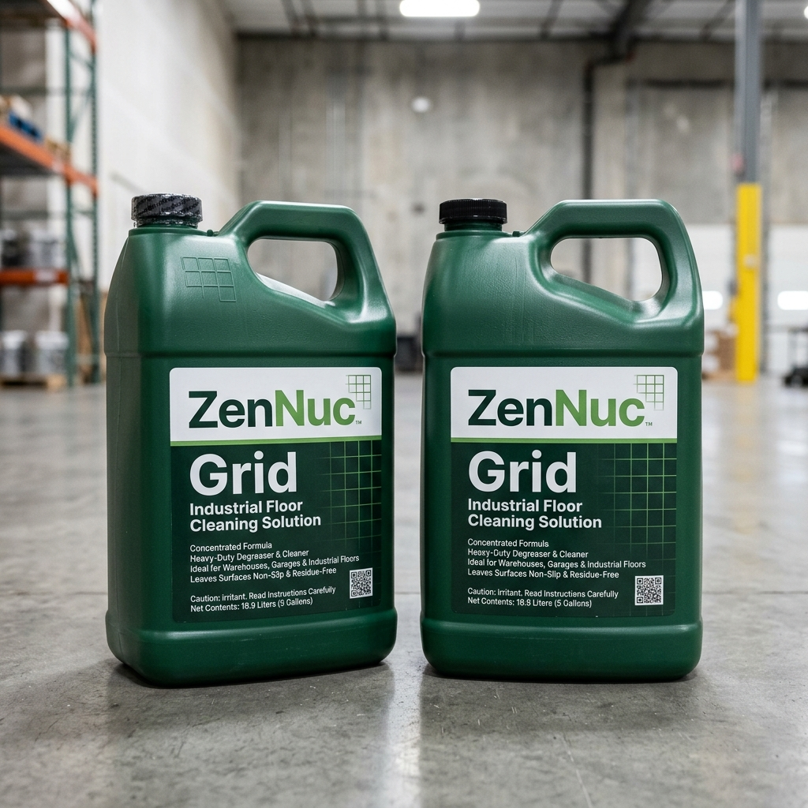
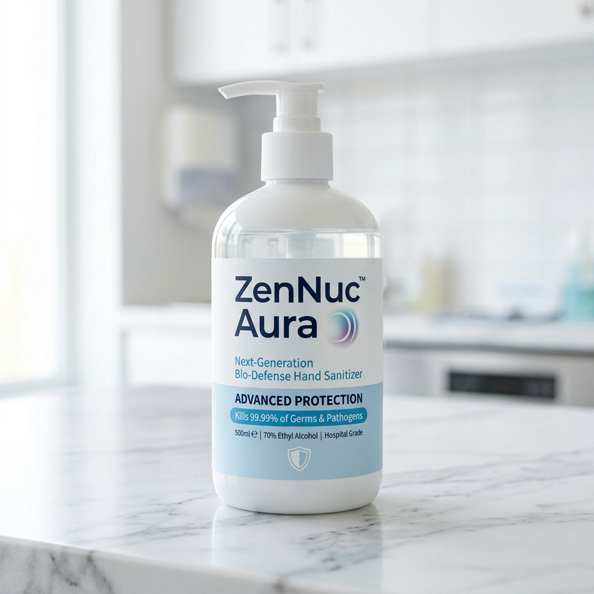
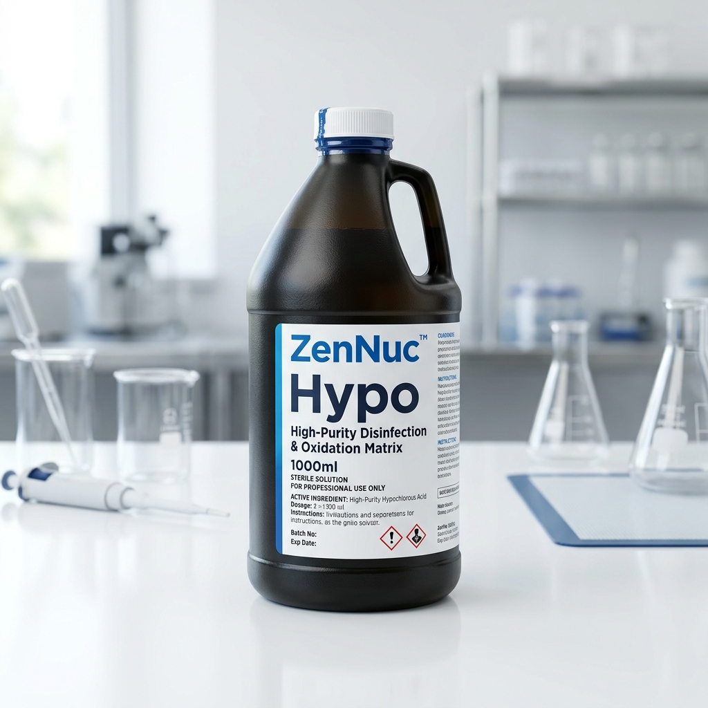
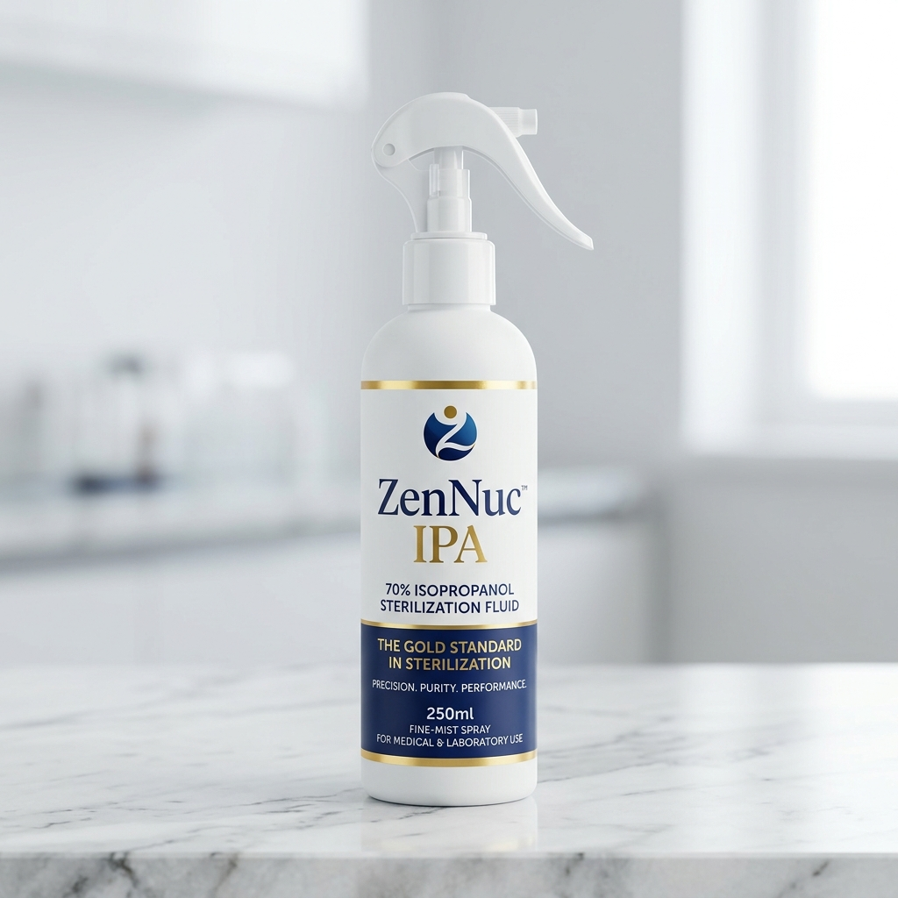
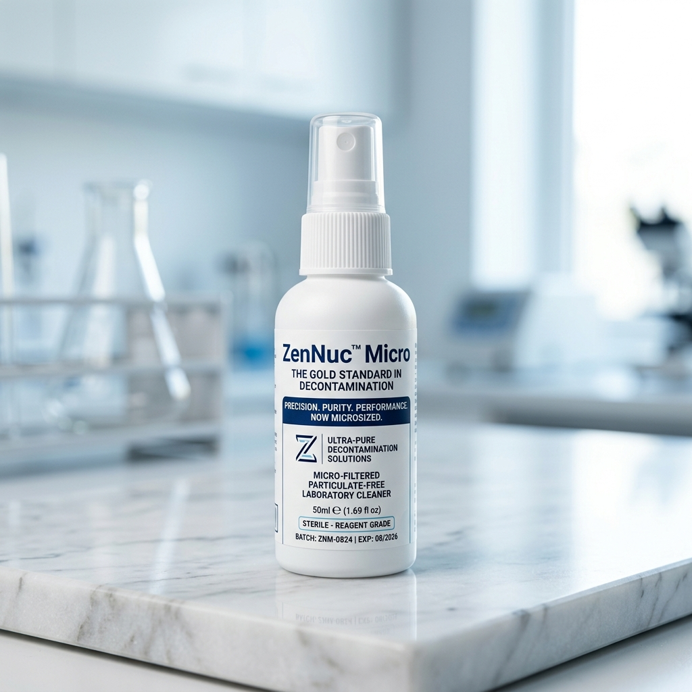

ZenNuc™
Deco
Precision. Purity. Performance.
Complete Nucleic Acid Destruction Beyond Traditional Surface Cleaners. Dual-reagent Cu²⁺-catalyzed Fenton-like mechanism for absolute amplicon shredding.

Kit Formulation & Technical Specifications
ZenNuc™ Deco is supplied as a matched-pair kit of two precisely formulated solutions designed for sequential application.
Deco Rox
Performance Comparison Matrix
An objective head-to-head comparison across five critical performance parameters.
Standard Operating Procedure (SOP) Workflow
For consistent validation within GLP-regulated environments, follow the certified sequential decontamination workflow outlined below.
Preparation
Clear target surfaces. Don standard PPE including nitrile gloves, lab coat, and safety eyewear before beginning the procedure.
Activation
Uniformly spray Solution A (Deco Meta), then follow immediately with Solution B (Deco Rox). Sequential order is critical to the reaction.
Incubation
Allow contact time of 2–5 minutes. A faint blue-green tint indicates chemical activation. Do not disturb during this phase.
Finalization
Wipe thoroughly using a lint-free tissue. Rinse with DI water or 70% Ethanol, then air dry. Surface is now fully decontaminated.
Global Safety & Regulatory Compliance
GLP/GMP Infrastructure Alignment
Every batch of ZenNuc™ Deco undergoes extensive verification and is accompanied by a full Certificate of Analysis (CoA). The residue-free finalization ensures complete safety when operating within certified ISO cleanrooms and high-containment Biosafety Level (BSL) workspaces.
PPE Requirement
Always wear proper protective gloves, laboratory attire, and eye/face protection when handling ZenNuc™ Deco components.
Flammability Warning — Solution A
Solution A contains Isopropanol; keep away from open flames, high heat sources, or sparks at all times during use and storage.
Storage Protocols — Solution B
Store strictly at ambient room temperature in a cool, dark place. Do not decant Solution B (Deco Rox) into unshaded or clear secondary containers — light exposure triggers premature peroxide degradation.
Scientific FAQs
Technical answers to the most common laboratory enquiries about ZenNuc™ Deco.
Single-bottle formulations suffer from continuous self-interaction of active ingredients, causing rapid shelf-degradation. ZenNuc™ Deco's dual-reagent system isolates Deco Meta and Deco Rox until the exact point of surface application, delivering a Cu²⁺-catalyzed Fenton-like reaction cascade with powerful hydroxyl radicals.
Yes. ZenNuc™ Deco is formulated as a non-corrosive system, safe on modern workspace polymers, glass, and alloy surfaces. Unlike traditional sodium hypochlorite-based cleaners, ZenNuc™ Deco is gentle on PCR machines, biosafety cabinets, laminar flow hoods, pipettes, glass manifolds, and synthetic workstations.
The validated contact time is 2 to 5 minutes. After applying Solution A followed immediately by Solution B, allow the mixture to remain on the surface undisturbed for this period. The visible faint blue-green tint provides optical confirmation that the catalytic reaction is actively proceeding.
The faint blue-green tint is a built-in visual activation indicator confirming the active degradation reaction is ongoing. It is generated by the copper-catalyzed peroxide cascade when Solution A and Solution B combine.
Yes. Every batch of ZenNuc™ Deco undergoes extensive verification at our Mirjole M.I.D.C. manufacturing facility and is accompanied by a full Certificate of Analysis (CoA). This documentation supports GLP-compliant laboratory practices, audit trails, and regulatory submissions.
ZenNuc™
Grid
Efficiency-Driven · Structural Authority
ZenNuc™ Grid is a specialized industrial floor cleaning solution engineered to harmonize advanced cleaning efficiency with heavy-duty structural performance. By bridging the gap between "peaceful efficiency" and "structured authority," the product offers a high-performance cleaning experience for demanding industrial environments.

Product Description
ZenNuc™ Grid is a specialized industrial floor cleaning solution engineered to harmonize advanced cleaning efficiency with heavy-duty structural performance. By bridging the gap between "peaceful efficiency" and "structured authority," the product offers a high-performance cleaning experience for demanding industrial environments.
Market Application
ZenNuc™ Grid is engineered specifically for the following sectors:
- Industrial Facilities: Designed to withstand the rigors of high-traffic warehouse and factory floors.
- Large-Scale Sanitation: Provides an authoritative cleaning solution for environments requiring consistent, heavy-duty maintenance standards.
Performance Benefits
ZenNuc™
Aura
Ultra-Pure · Broad-Spectrum · Residue-Free
In clinical environments, commercial production zones, and high-traffic workspaces, hands serve as the primary vector for cross-contamination. ZenNuc™ Aura is engineered to meet the stringent demands of healthcare professionals and industrial operators alike — delivering ≥99.999% Bio-Burden Log Reduction within 15 seconds.

Technical Specifications
Elite Performance Features
Broad-Spectrum Efficacy
Achieves rapid log-reduction against an extensive biological grid of transient microflora, enveloped viruses, and fungi.
Advanced Dermal Shield
Actively preserves skin moisture barriers to prevent occupational contact dermatitis during high-frequency use.
Residue-Free Fast Drying
Evaporates cleanly to allow immediate and seamless donning of gloves — zero downtime for healthcare professionals.
SOP-Validated Purity
Completely free from artificial fragrances, dyes, and harsh common allergens — validated for sensitive clinical environments.
Fields of Application
🏥 Clinical & Healthcare Facilities
Pre-procedural hand antisepsis in diagnostic labs, clean zones, and critical care units.
🔬 Cleanrooms & Controlled Environments
Essential hand hygiene protocols prior to gowning in ISO-certified manufacturing environments.
🍽️ Pharmaceutical & Food Processing
Critical intervention points to maintain strict bio-burden control on active processing lines.
🏢 Corporate Infrastructure
Enterprise-wide high-frequency deployment to safeguard workspace health and operational continuity.
ZenNuc™
Hypo
Stabilized · High-Velocity · Broad-Spectrum
Microbial biofilms, organic impurities, and persistent viral strains pose an ongoing challenge to industrial sanitation, clinical environments, and water management systems. ZenNuc™ Hypo represents the gold standard in high-purity, stabilized hypochlorite technology — maintaining an exceptional free available chlorine profile via a powerful oxidative pathway.

Technical Specifications
Elite Performance Features
Stabilized Oxidative Power
Formulated to resist thermal and photolytic breakdown, ensuring reliable active chlorine PPM delivery at point of use.
Deep Biofilm Penetration
Shears through protective layer structures to fully neutralize embedded bacterial colonies via EPS disruption.
Broad-Spectrum Efficacy
Delivers high-level disinfection against vegetative bacteria, viral particles, and fungal spores.
Clean Surface Performance
Formulated to optimize surface wetting and maximize biocidal impact across all infrastructure materials.
Fields of Application
💧 Advanced Water Treatment
Bio-fouling control, algae mitigation, and continuous disinfection in industrial cooling loops and process water systems.
🏭 Hard Surface Decontamination
Deep sanitization of floors, structural walls, and manufacturing equipment in production facilities.
🔧 Clean-in-Place (CIP) Systems
Disinfection of internal pipelines, high-capacity holding vessels, and automated filling loops.
🌿 Environmental Bio-Burden Control
Rapid containment and absolute neutralization of large-scale environmental biological spills.
ZenNuc™
IPA
Precision. Purity. Performance.
An ultra-pure, ultra-filtered isopropyl alcohol formulation for rapid, residue-free microbial kill on hard surfaces. High-velocity denaturation of microbial proteins strips away lipid envelopes and neutralizes a wide biological grid of microscopic threats, drying instantly without streaks.

Product Description
Controlled manufacturing areas, medical equipment surfaces, and high-purity laboratory workstations require relentless sterilization protocols to keep ambient bio-burdens at zero. ZenNuc™ IPA is an ultra-pure, ultra-filtered isopropyl alcohol formulation developed to perform rapid, residue-free microbial kill on hard surfaces. By utilizing high-velocity denaturation of microbial proteins, it strips away lipid envelopes and neutralizes a wide biological grid of microscopic threats, drying instantly without streaks or chemical residue.
Technical Specifications
Elite Performance Features
Instant Structural Kill
Actively disrupts cell wall integrity for fast, high-efficiency sterilization.
Streak-Free Volatility
Leaves absolutely no chemical residue, allowing safe processing of delicate optics.
Optimized Wetting Properties
Spreads evenly across metallic, polymer, and glass cleanroom infrastructure.
Electronic Compatibility
Highly effective for deep cleaning sensitive clean-room equipment and tools.
Fields of Application
🔧 Cleanroom Tool Maintenance
Pre-and-post run sanitization of structural instrumentation and mechanical assemblies.
🏭 Hard Surface Decontamination
Spray application over workbench tables, stainless steel panels, and transfer hatches.
🧤 Glove and Gown Protocols
Supplemental spray step during progression through cleanroom anterooms.
ZenNuc™
Micro
Precision. Purity. Performance. Now Microsized.
Sub-micron contaminants and deep-seated microflora require a specialized approach that goes beyond standard cleaners. ZenNuc™ Micro introduces an advanced, micro-filtered decontamination matrix optimized for micro-surfaces, automated instrumentation, and medical laboratory gear.

Product Description
Sub-micron contaminants and deep-seated microflora require a specialized approach that goes beyond standard cleaners. ZenNuc™ Micro introduces an advanced, micro-filtered decontamination matrix optimized for micro-surfaces, automated instrumentation, and medical laboratory gear. Specially treated to eliminate microscopic particulates, ZenNuc™ Micro breaks down persistent soilings and biological polymers at the molecular level, delivering absolute, micron-level surface purification without degrading critical equipment elements.
Technical Specifications
Elite Performance Features
Microized Precision Cleansing
Specially tuned to remove microscopic chemical residues and persistent proteins.
Material Protection Matrix
Engineered safely for delicate glass, high-spec polymers, and non-corrosive alloys.
Particulate-Free Security
Strictly processed to prevent the introduction of foreign sub-micron entities.
Deep Structural Penetration
Loosens surface micro-soils embedded within tight structural tolerances.
Fields of Application
🔭 Precision Instrument Cleaning
Decontamination of optical heads, clinical pipettes, and automated diagnostic modules.
🧪 Medical Lab Maintenance
Sanitization of high-fidelity analysis equipment and sensitive workspace substrates.
💊 Pharmaceutical Production Lines
Targeted spot-decontamination of internal machinery interfaces.
Ready to Protect Your Environment?
Contact Densukia International for technical documentation, pricing, and Certificate of Analysis for any ZenNuc™ product.